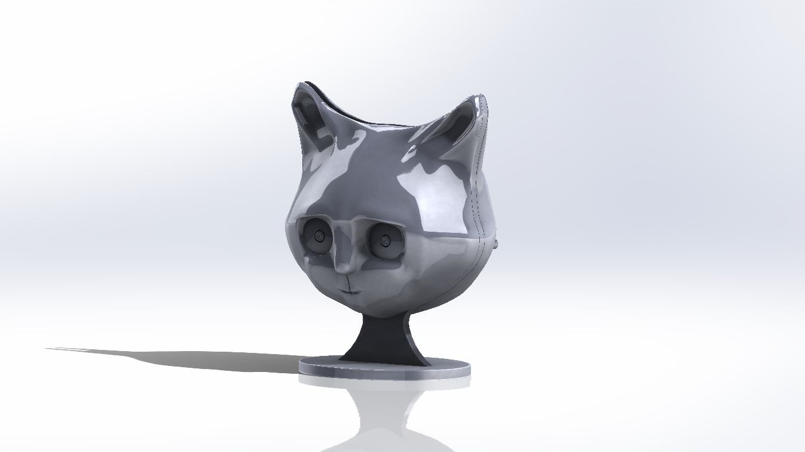
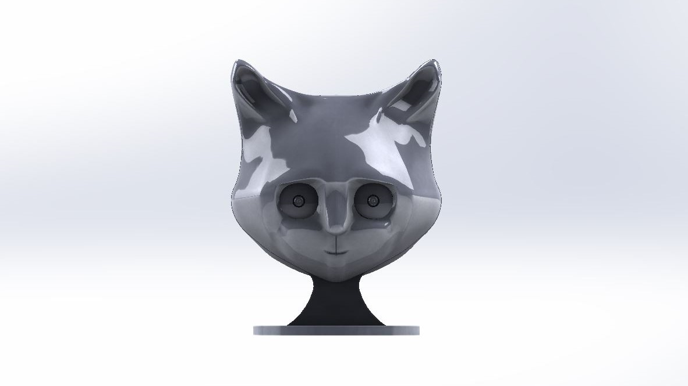
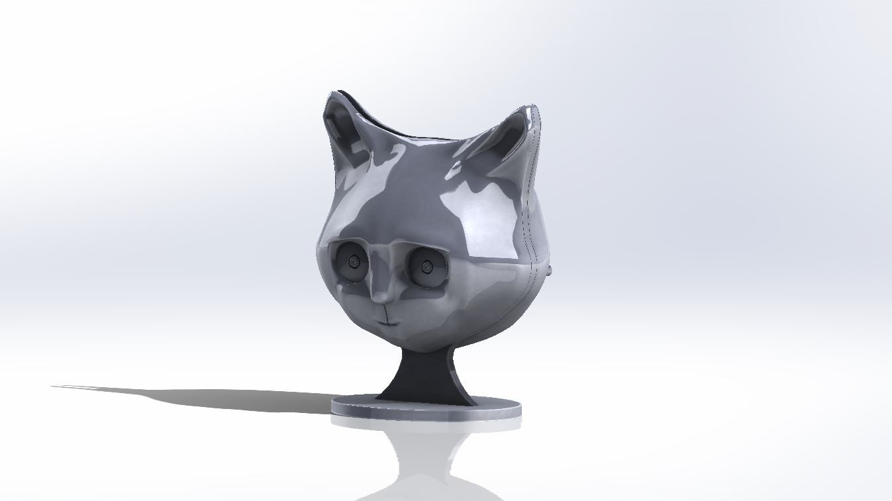
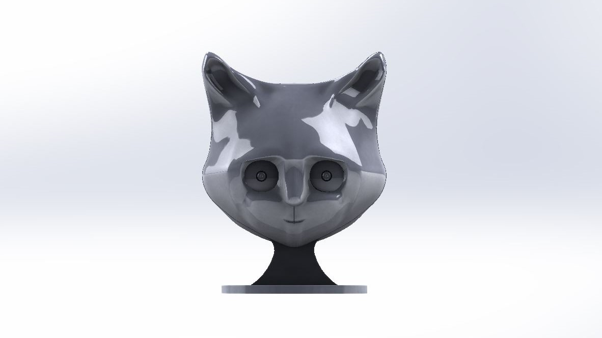

Problem
Elderly people are prone to crimes such as theft, burglary and even murder. Other than that they have a fear of emergency situations such as accidental falls. But there is a limited facility available for them to intimate someone in such situations. The surveillance system present nowadays does not have a proactive alert system and also affects the user experience with their apparent designs.
User
The primary users are household residents who feel bad when they are apparently in front of a camera but looking for a surveillance system.
My Role
The solution concept is a surveillance camera powered with in-built Artificial Intelligence which would be looking aesthetically pleasing so that it can be placed inside the home for surveillance. My role was to design the product in the shape of a real cat face as per the request of the client. The design was to be done sufficient to accommodate the processor (Raspberry Pi 3B+) and a Raspi Camera v2.
Design Process
Being a beginner in designing an animal face, there were many explorations in choosing the correct software for the modelling. After making too many abstract sketches and exploration of modelling software. Finally, after trying out the design in many software, the design output was good in the sculpt module of Autodesk Fusion 360. The camera decided to be placed in one of the eyes to get a good field of vision. The other eye was to be sed for IR flash which will be useful in night vision. The design was confirmed by the client after some iterations which had changes in eyes and ears.